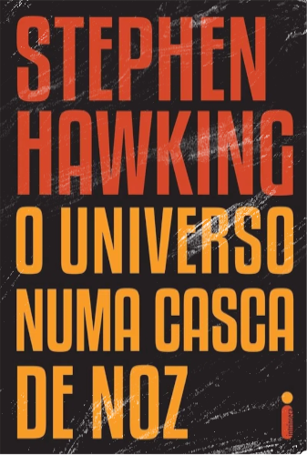
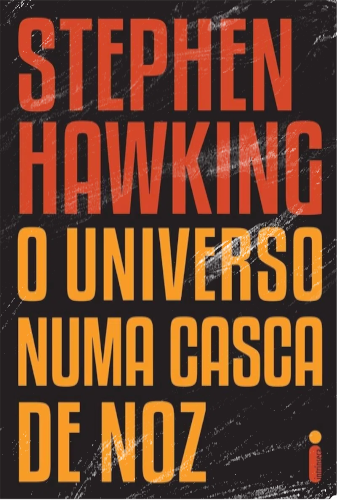

Stephen William Hawking
Stephen William Hawking (AFI: ['stivən 'hɔkɪŋ]; Oxford, 8 de janeiro de 1942 — Cambridge, 14 de março de 2018) foi um físico teórico e cosmólogo britânico, reconhecido internacionalmente por sua contribuição à ciência, sendo um dos mais renomados cientistas do século. Doutor em cosmologia, foi professor lucasiano emérito na Universidade de Cambridge, um posto que foi ocupado por Isaac Newton, Paul Dirac e Charles Babbage. Foi, pouco antes de falecer, diretor de pesquisa do Departamento de Matemática Aplicada e Física Teórica (DAMTP) e fundador do Centro de Cosmologia Teórica (CTC) da Universidade de Cambridge.
Seus trabalhos científicos incluem um teorema sobre a singularidade gravitacional no âmbito da relatividade geral (em colaboração com Roger Penrose) e a previsão teórica de que os buracos negros emitem radiação, frequentemente chamada de Radiação Hawking. Hawking foi o primeiro cientista a estabelecer uma teoria da cosmologia explicada pela união da teoria geral da relatividade e da mecânica quântica. Ele foi um defensor fervoroso da interpretação de muitos mundos na mecânica quântica.
Hawking alcançou sucesso comercial com vários trabalhos nos quais ele discute suas próprias teorias e cosmologia em geral. Seu livro Uma Breve História do Tempo permaneceu na lista de mais vendidos do The Sunday Times durante 237 semanas. Em 2002, Hawking ficou em 25º lugar na pesquisa da BBC sobre os 100 Maiores Britânicos de todos os tempos. Em 1963, Hawking foi diagnosticado com uma forma de início precoce da doença neuronal motora (MND; também conhecida como esclerose lateral amiotrófica "ALS" ou doença de Lou Gehrig) que o paralisou gradualmente ao longo das décadas. Mesmo após a perda de sua capacidade de falar, ele ainda era capaz de se comunicar por meio de um dispositivo gerador de fala, inicialmente através do uso de um interruptor de mão e, mais tarde, usando um único músculo da bochecha. Ele morreu no dia 14 de março de 2018, aos 76 anos de idade, depois de lutar contra essa doença durante mais de 50 anos.
Principais Obras
 
